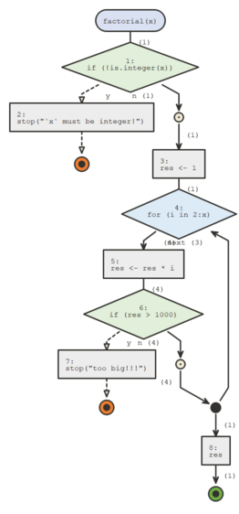

This section introduces the browse argument of
flow_run() and the functions flow_debug() and
flow_debugonce()
browse
flow_run() runs a call and displays the logical path
that was taken, but what if we’d like to walk through the code step by
step, as we would by inserting a browser() call in our
function’s body or calling debug() or
debugonce() on our function ?
In these cases we can use the browse argument, set it to
TRUE and you’ll be able to browse through the function as
it’s run. And refresh the diagram by typing d or the
equivalent flow_draw()
flow_debug()
flow_run is convenient to inspect the logic of a
function that we call directly, sometimes we might want to inspect a
call that’s part of another function’s body.
In this situation we can use flow_debug(). These work a
lot like debug() when using browse = TRUE.
library(flow)
flow_debug(factorial)
#> Tracing function "factorial" in package "base"
factorial5 <- function(){
x <- 5L
factorial(x)
}
factorial5()
#> [1] 120